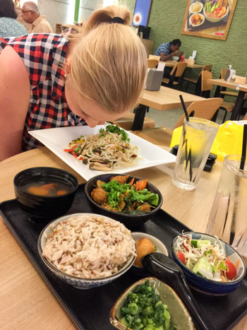

Trip
2-7 april 2015
Kuala Lumpur, Malaysia
A two week long trip in Asia, starting from the capital of Thailand, Bangkok, flying south to Phuket and ending in Kuala Lumpur, the capital of Malaysia.
One of the coolest experiences was the amazing view (se top picture) 370 meters up in Petronas Twin Towers which with its height of 452 meters is the eight highest building in the world.
